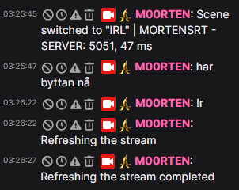

1 Dag "Kjapt og gale"
Standard Hosting
100 kr
- ✅ 24 timers SRT Hosting
- ✅ Personlig Stats-link
- ⭐ Hjelp inkludert: Jeg bistår med det grunnleggende om du er helt uvitende om hvordan alt fungerer.
1 Dag m/ Setup hjelp
Full nødløsning
149 kr
- ✅ Alt i standard-pakken
-
⭐ Full Opplæring & Setup:
Jeg setter opp alt og lærer deg hvordan du bruker det. Du kan bruke denne configen hos andre senere ved å bare endre f.eks stats-link. - ✅ Oppsett av Sceneshifter (BRB/Low Bitrate)
- ✅ Div. hjelp om du er helt uvitende
Bestill 1-Dags Leie
"Kjapt og gale – rett på stream"
Ønsker du en mer økonomisk løsning?
Hvis du planlegger å streame mye fremover, er NOOK sitt tilbud et bedre valg rent økonomisk. Langsiktig leie vil lønne seg over tid sammenlignet med dagspakker.
🚀 Nyhet: NOOK vil snart tilby en eksklusiv pakke som inkluderer både SRT og en egenprogrammert Discord-bot med flere unike funksjoner!
Ta kontakt med han for mer info om pris og faste avtaler.
Se det i aksjon
Live Bitrate Stats i chat

Her streames det til serveren! Det sendes fra en GoPro 8 til en Raspberry Pi, med en Nighthawk M1 router som internettkobling.